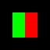
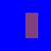

Two builds retained. No chamber visibility or art pass.
Build2 corrects the depth attachment. Green means visible player, red means hidden player, black means outside. Right: amber fill over blue.


These are enlarged synthetic 64px probes, not game art. Seven pixel/control checks pass, but GL1282 remains because custom uColor collides with Pixi's mesh color uniform.
Next E07P: rename and audit uniform names, rerun capability, then integrate. Report. Godot shipping target; Pixi harness.